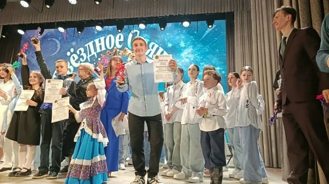
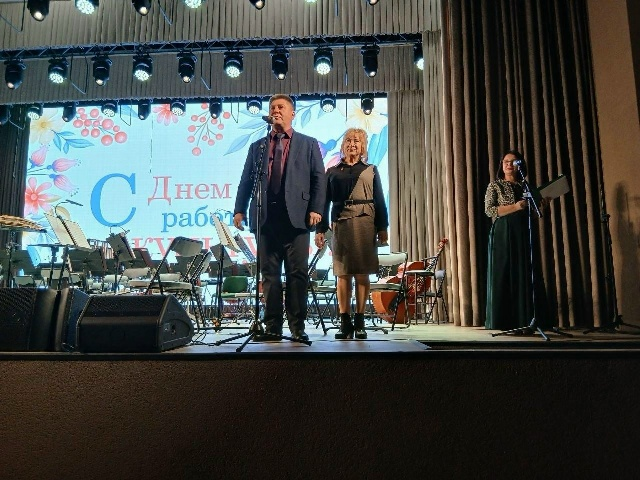
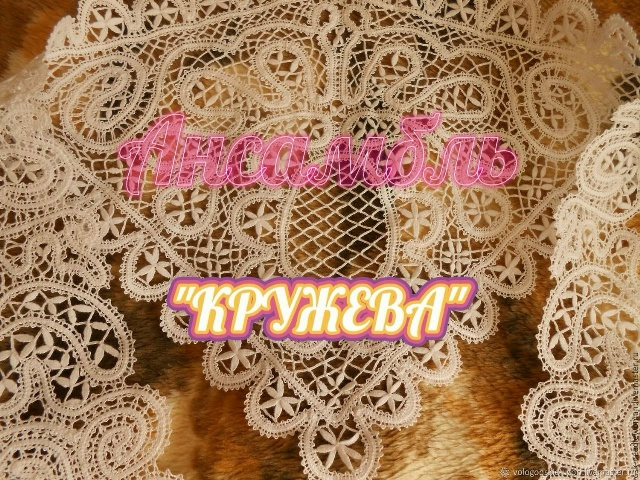
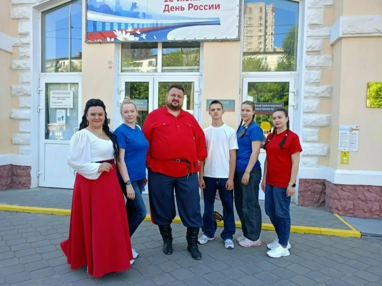
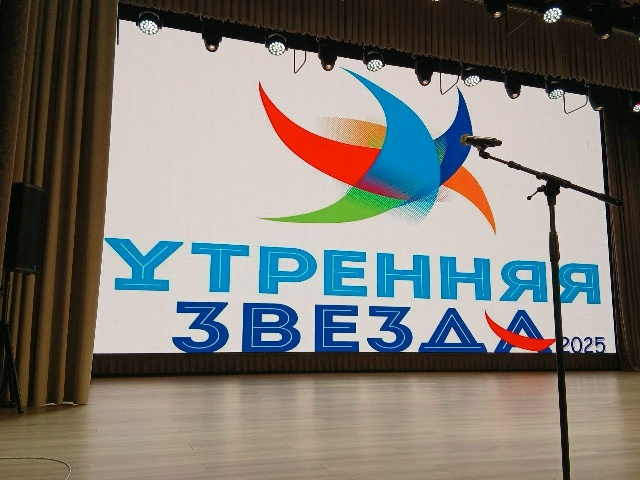

19 апр · 2026Конкурс
«Звёздное сияние»
Международный конкурс исполнительского мастерства собрал на одной сцене юных и взрослых артистов.
Читать публикацию ↗Нажмите на карточку или текстовый блок, чтобы прослушать его.
Место встречи · место творчества
Здесь встречаются поколения, раскрываются таланты и рождаются общие воспоминания Станицы Луганской.
Жизнь дворца
Архив заметных мероприятий по открытым публикациям. Свежие анонсы появляются в официальном канале учреждения.

19 апр · 2026Конкурс
Международный конкурс исполнительского мастерства собрал на одной сцене юных и взрослых артистов.
Читать публикацию ↗Молодёжь
Финал окружной игры КВН, где команды встретились в юморе и импровизации.
Источник ↗
26 мар · 2026Концерт
Праздничная программа с участием артистов Луганской академической филармонии.
Источник ↗Новые концерты, конкурсы и встречи
Все новости в MAX ↗Творческие объединения
В отчёте учреждения за 2024 год упоминались десять коллективов художественной самодеятельности и кружок компьютерной грамотности.
Уточнить условия записи →
01
02
03Народный ансамбль «Любо»
Народный хор «Сударушка»
ВИА «Руки Венеры»
Студия «Домовёнок»
Ансамбль «Криница»
Ансамбль «Славянский луг»
Детский ансамбль «Лужок»
Студия «Колорит»
Народный театр
Группа «Тандем-класс»
О дворце
После капитального ремонта Дворец культуры вновь открыл двери 9 мая 2025 года. В здании обновили фасад и помещения, инженерные системы, сценическое, звуковое и кинооборудование.
Сегодня здесь работают большой и малый залы, художественная мастерская, танцевальная и вокальная студии, библиотека и читальный зал.
Источник: публикация об открытии ↗По итоговой публикации о работе учреждения за 2024 год. Проверить источник ↗
«Творим вместе —
сохраняем главное»
Открытость
Преемственность
Созидание
Участие
Приходите к нам
Перед визитом рекомендуем уточнить режим работы и расписание занятий по телефону или в официальном канале.
Телефон и почта опубликованы в открытой карточке организации Checko. Перед официальным использованием рекомендуем уточнить их у учреждения.
Информация собрана из открытых источников и актуальна на 23.09.2026.
Фотографии мероприятий взяты из связанных публикаций VK. Список коллективов и статистика относятся к отчёту за 2024 год и могли измениться. Актуальное расписание в открытых источниках не найдено.